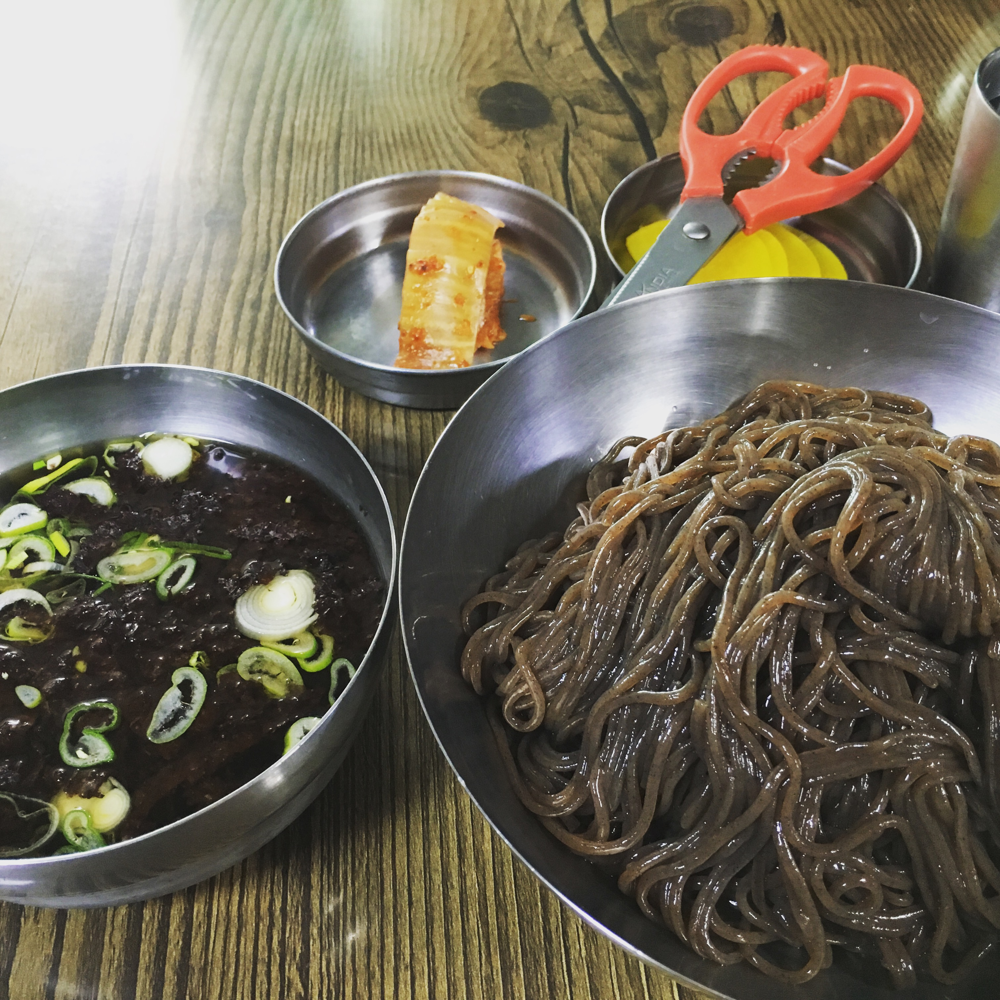
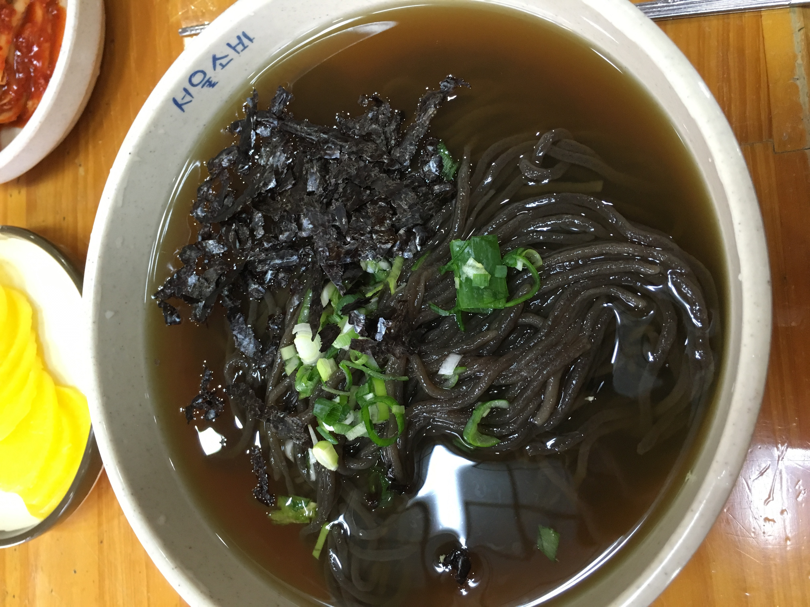

Meal(면/식사류)
- 깐쇼새우
- 진미집
- 서울소바
말 그대로 깐쇼새우 전문점. 깐쇼새우와 해물누룽지탕, 양장피를 묶어 저렴한 가격에 세트로 판매하고 있다. 메뉴 주문시 미니 볶음밥과 미니 음료수(100원)를 싼 가격에 주문할 수 있다.

여름이면 생각나는 소바집. 푸짐한 양의 메밀면을 육수와 따로 주는 것이 특징이다. 무더운 여름에 소바 한그릇과 모주를 함께 먹으면 속까지 차가워진다.

진미집과 쌍벽을 이루는 소바집으로 면에서 달걀 향과 같은 메밀의 향이 진하게 난다. 한 그릇에 8000원으로 가성비가 대단하지는 않지만 면의 향이 생각나 돌아가게 된다. 날이 시원해지면 영업을 멈추므로 가을쯤에는 전화를 걸어 확인하는 것이 좋겠다.